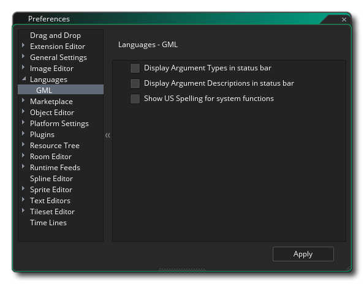

The Language Preferences are used to define how some of the language features for programming will be displayed in the IDE of GameMaker Studio 2 . The options for GML are as follows:
- Display argument types in status bar: This option relates to when you are using your own custom scripts and have used JSDoc notation to identify the different arguments, etc... (see here for more information). When this option is checked, and you have specified the argument types in the script, then they will be shown in the status bar at the bottom of the editor, enclosed in {}. This is off by default.
- Display argument descriptions in status bar: If this is checked then any descriptions you have given your custom scripts using the JSDoc notation will be shown in the status bar at the bottom of the editor window. This is off by default.
- Show US spelling for system functions: By default GameMaker Studio 2 uses GB English spelling for functions, for example draw_text_colour, however this may not be exactly what you are used to and so you can switch to US spellings using this option, so that the functions become draw_text_color, for example. This is off by default.